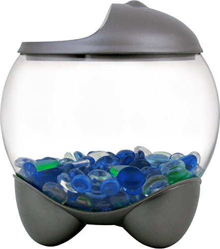
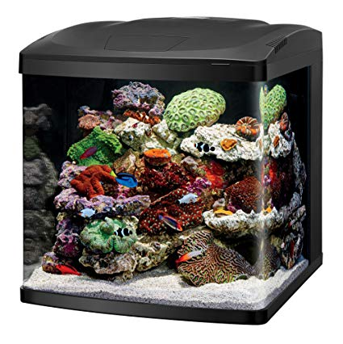
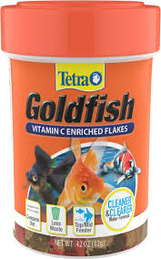
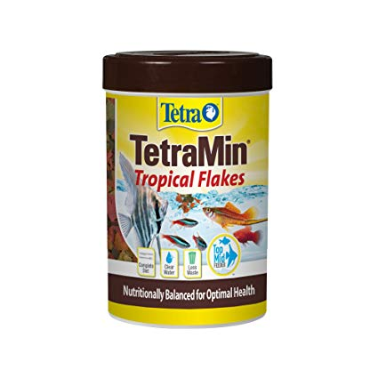

Fish Tanks:

Tetra Betta Bubble Fish Bowl
Price: 18$
Give your finned friend a comfortable place to live with the Tetra Betta Bubble Fish Bowl. This bowl features a convenient feeding hole in the hood. The built-in LED light has an on/off switch to give your betta ample lighting. Tetra Betta Bubble Fish Bowl holds .5 gallons and is ideal for beginner fishkeepers.

Coralife LED BioCube Aquarium Kit
Price: 150$
Give your finned friends a sleek new home with the Coralife LED BioCube Aquarium Kit. This stylish tank features a modern hood with vibrant LED lighting for both fresh and saltwater environments. It has an integrated 24-hour timer and includes automatic 30-minute sunrise/sunset and 60-minute moonrise/moonset functions to replicate a natural day/night cycle. This aquarium is also easy to setup and maintain with built-in filtration that is compact and customizable. Coralife LED BioCube Aquarium Kit is great for beginners or pet parents that are ready to take their home tank to the next level.
Fish Food:

TetraFin Flakes Goldfish Food
Price: 15$
Feed your Goldfish a diet that keeps water cleaner longer with Tetra Fin Flakes Goldfish Food. Low quality food is harder for fish to digest which means more fish waste and frequent water changes. Tetra Fin Flakes Goldfish Food is highly digestible, reducing fish waste and keeping water cleaner longer. These hearty flakes include Tetra's patented ProCare blend to support fish's immune system for optimal health and long life. Made with high-protein fish meal and natural color enhancers, Tetra Fin Flakes Goldfish Food will not cloud water.

TetraMin Tropical Flakes Fish Food
Price: 21$
Feed your tropical fish a balanced diet and keep water cleaner and clearer with Tetra Min Tropical Flakes Fish Food. Tropical fish need a diet with protein and fat for energy and vitamins to prevent disease. Tetra Min Tropical Flakes Fish Food is made with Tetra's patented ProCare blend of vitamins and Omega-3 fatty acids to boost immunity and protect against stress and disease. And it's easy to digest and will not leach color, helping to keep water clean and clear.